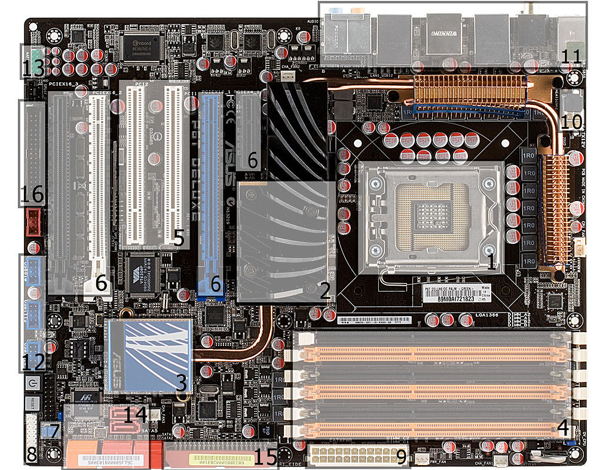
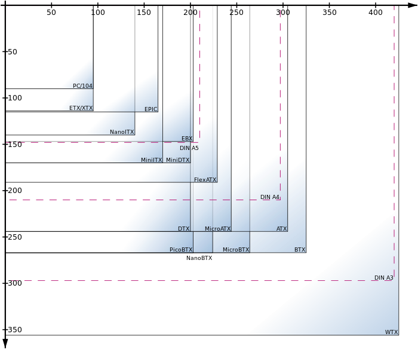
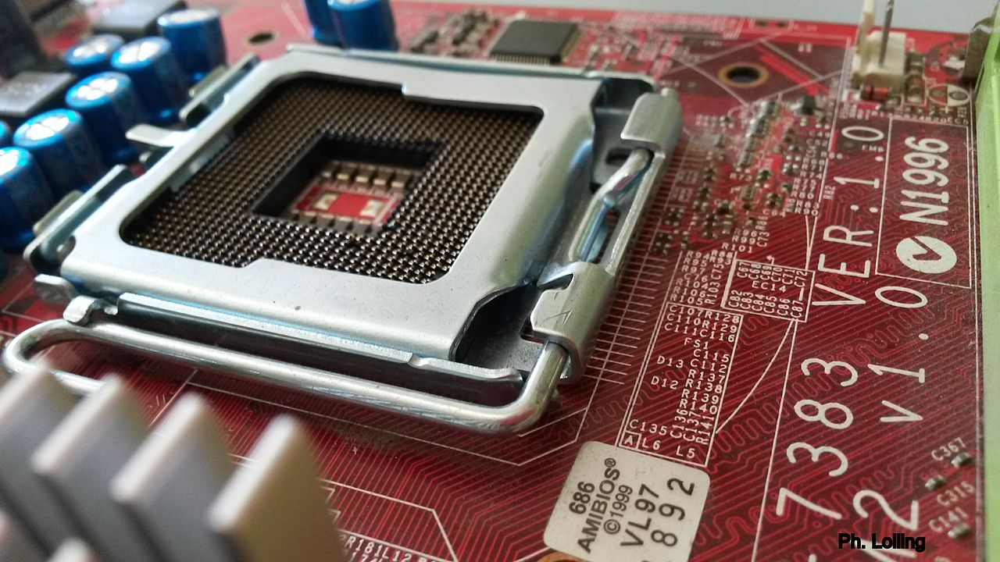

Le schede Madri
La scheda madre o scheda di sistema, anche conosciuta con i termini inglesi motherboard ("scheda madre") o mainboard ("scheda principale"), abbreviata MB, M/B, mobo, è una parte fondamentale di un moderno personal computer: sotto forma di scheda elettronica principale raccoglie in sé tutta la circuiteria elettronica e i collegamenti di interfaccia tra i vari componenti interni principali del PC (CPU, memoria e le altre schede elettroniche montate o alloggiate sopra) comprendendo quindi anche i bus di espansione e le interfacce verso le periferiche esterne.
È responsabile dunque della trasmissione e temporizzazione corretta di molte centinaia di segnali diversi, tutti ad alta frequenza e sensibili ai disturbi, tra processore e periferiche interne e viceversa. La sua buona realizzazione è quindi un fattore chiave per le prestazioni e l'affidabilità dell'intero computer.

Descrizione
È composta da un circuito stampato estremamente complesso, ricavato da un sandwich di strati di vetronite e rame: generalmente una scheda madre può avere da quattro a sei strati di rame. In questi sono ricavate le piste che collegano i componenti, che devono essere calcolate con molta cura: alle frequenze normalmente adoperate dalle CPU e dalle memorie RAM in uso oggi, infatti, la trasmissione dei segnali elettrici non si può più considerare istantanea ma deve tenere conto dell'impedenza propria della pista di rame e delle impedenze di ingresso e di uscita dei componenti connessi, che influenzano il tempo di volo dei segnali da un punto all'altro del circuito.
Su questo circuito stampato vengono saldati una serie di circuiti integrati, di zoccoli e di connettori; gli integrati più importanti sono il chipset che svolge la gran parte del lavoro di interfaccia fra i componenti principali e i bus di espansione, la ROM (o PROM, EEPROM o simile), il Socket per il processore e i connettori necessari per il montaggio degli altri componenti del PC e della espansione. La struttura attuale delle schede di sistema dei computer è il frutto di un'evoluzione tecnologica che ha portato a definire una architettura di sistema valida, in linea di massima, per tutti i sistemi di classe personal computer o di potenza paragonabile.
Formati standard
Il processo di standardizzazione ha interessato non solo il progetto elettronico, ma anche e soprattutto la forma, le dimensioni e il posizionamento dei componenti: nel tempo si sono affermati alcuni formati standard a cui si sono conformati tutti i produttori. Nel campo dei personal computer IBM compatibili è stata la Intel a giocare un ruolo chiave, imponendo i due formati ATX e BTX, che nelle loro varie versioni sono adottati da tutte o quasi le schede madri per PC prodotte oggi. Ma ne esistono molti altri:

- PC/XT - Il formato originale creato da IBM per il suo primo personal computer, l'IBM-PC. È stato adottato dalle schede madri di un gran numero di cloni, poiché non era coperto da copyright, e divenne per questo uno standard de facto.
- AT (Advanced Technology) - Anche questo secondo formato divenne molto popolare, soprattutto per le schede madri 386. Ora è obsoleto, ma è stato la base per lo sviluppo dell'ATX.
- Baby AT - Il successore IBM del formato AT. Funzionalmente del tutto equivalente, era però molto più piccolo e guadagnò seguito rapidamente; le schede madri che lo adottavano non avevano interfaccia AGP.g
- ATX - nato a partire dal Baby AT, è a tutt'oggi il formato di scheda madre più comune in commercio.
- ETX, usato nei sistemi embedded e nei computer monoscheda.
- Mini-ATX - quasi identico all'ATX, ma leggermente più piccolo.
- MicroATX - un ATX ridotto, con tre soli slot di espansione PCI o PCI express.
- FlexATX - una variante di microATX che permette maggior flessibilità nel progetto della scheda madre e nel posizionamento dei componenti.
- LPX - Questo formato è basato su un progetto Western Digital, e permette di usare case più sottili spostando le schede di espansione su un riser (in sé una speciale scheda di espansione) disponendole parallele alla scheda madre anziché perpendicolari. Di solito viene adottato solo dai grandi produttori OEM.
- Mini LPX - un sottoinsieme delle specifiche LPX.
- NLX - un tipo di formato a basso profilo, che prevede un riser per le schede di espansione. È stato ideato per assecondare le richieste del mercato per PC piccoli, ma non ha mai guadagnato molta popolarità.
- BTX (Balanced Technology Extended) - uno standard recente, proposto da Intel come possibile successore dell'ATX.
- microBTX e picoBTX - sottoinsiemi più piccoli del BTX.
- Mini-ITX - Un formato di scheda madre molto piccolo ad alta integrazione, introdotto da VIA e pensato per thin client, chioschi elettronici e set-top box.
- Nano-ITX - Altro formato di scheda madre molto piccolo ad alta integrazione, introdotto da VIA e pensato per thin client, chioschi elettronici e set-top box. Utilizza processori Via C7 o Eden. Le dimensioni sono di 12cm per ogni lato.
- Pico-ITX - Formato di scheda madre molto piccolo ad alta integrazione, introdotto da VIA nel 2007 e pensato per thin client, chioschi elettronici e set-top box. Utilizza processori Via C7 o Eden. Le dimensioni sono di 10x7,2cm di lato.
- WTX (Workstation Technology Extended) - un formato grande, molto più dell'ATX, ideato per schede madri di server e workstation multiprocessori di fascia alta.
Componenti di una scheda madre
I componenti di una scheda madre possono variare molto a seconda di che tipo di computer si sta considerando: nel seguito di questa descrizione faremo riferimento a una generica scheda madre per personal computer.
- CPU Socket: è uno zoccolo ZIF (Zero Insertion Force) che accoglie la CPU. Nelle schede embedded (o in quelle vecchie e molto economiche) è assente, e il processore è saldato direttamente sullo stampato. Lo zoccolo (socket) può essere di tipo PGA o LGA. Il primo tipo PGA (sigla di Pin Grid Array) è quello adottato per molti processori AMD (Socket A, 754, 939 e AM2) e dai primi processori moderni Intel (PIII, Celeron). Nel caso di processori di tipo PGA, i pin di interconnessione tra la CPU stessa e i contatti presenti sul socket risiedono sulla parte inferiore della CPU. Se il socket è di tipo LGA (ovvero Land Grid Array) i piedini (pin) risiedono direttamente sul socket stesso anziché sulla CPU ed è necessaria una piastra di caricamento per tenere in posizione la CPU dato che, a differenza delle CPU PGA, non è tenuta in posizione dai piedini che vanno ad incastrarsi nel socket. La soluzione LGA è adottata da diverso tempo da Intel con molti dei suoi processori Pentium IV e ora con la serie Core, entrambi interfacciati con 775 pin. A differenza di Intel, la rivale AMD ha adottato solo ultimamente soluzioni LGA con l'avvento dei processori Athlon FX serie 7x interfacciati con 1207 pin alla scheda madre.

- La ROM (può essere PROM, EEPROM, flash o altro) che contiene il BIOS della scheda madre; è un tipo di firmware dalle funzionalità molto limitate. Le sue funzioni sono essenzialmente tre: eseguire il controllo dell'hardware all'accensione (il POST, Power On Self Test), caricare il sistema operativo e mettere a disposizione di questi alcune primitive (routine software) per il controllo dell'hardware stesso.
- Chipset: l'insieme di chip che si occupano di smistare e dirigere il traffico di informazioni passante attraverso il Bus di sistema, fra CPU, RAM e controller delle periferiche di input/output (come Floppy disk, Hard disk ecc.).
- Northbridge: un chip del chipset che connette il processore con la memoria RAM e con i bus di espansione principali (PCI, PCI express e AGP); i modelli più recenti incorporano anche le interfacce ATA e/o SATA per gli hard disk, che sono i componenti più critici per le prestazioni di un personal computer. È l'elemento più importante del chipset e il suo buon funzionamento è cruciale per la stabilità e la velocità della macchina. Le CPU AMD a 64 bit, integrando al loro interno il controller della RAM a cui quindi si collegano direttamente, hanno bisogno di un north bridge meno complesso e costoso.
- Southbridge: è il secondo componente del chipset e il suo compito è quello di gestire tutte le interfacce a bassa velocità: è connesso al north bridge tramite il bus di espansione e gestisce le porte seriali e parallele, l'interfaccia per la tastiera e il mouse, l'interfaccia Ethernet, le porte USB e il bus SMB.
- Una batteria al litio in grado di alimentare per anni l'orologio di sistema e una piccola quantità di memoria RAM in tecnologia CMOS in cui il BIOS memorizza alcuni parametri di configurazione dell'hardware.
- Gli slot d'alloggiamento della Memoria RAM (Random Access Memory) che possono essere di diversi tipi quanti sono i tipi di RAM diffusi dalle industrie sin dai primi anni ottanta. Attualmente (2006) le schede madri in commercio adottano slot DDRAM, evoluzione delle precedenti SDRAM, che a loro volta erano derivate dalle SIMM e SIPP presenti sulle macchine che montavano processori compatibili con l'80386.
- Il bus di espansione. Si tratta di un collegamento dati generico punto-multipunto, progettato per permettere di collegare alla scheda madre delle altre schede di espansione alloggiate su connettori (slot), che ne estendono le capacità. Attualmente il tipo di bus più diffuso è il bus PCI, destinato nel tempo a lasciare strada alla sua estensione PCI Express, più veloce e più semplice elettricamente. In linea di principio ad un bus può essere collegato hardware di ogni tipo: schede video aggiuntive, schede audio professionali, schede acquisizione dati, unità di calcolo specializzate, coprocessori: nella pratica si ricorre ad una scheda di espansione su slot interno solo per hardware che ha bisogno di una collaborazione estremamente stretta con la CPU o con la memoria RAM; per le espansioni hardware meno critiche si sfruttano le connessioni "lente" (USB, seriali ecc.). Fa parte del bus PCI anche lo slot AGP, dedicato alla scheda video, che è uno slot PCI dotato di alcuni comandi aggiuntivi separati e di una trasmissione dati privilegiata; anche le interfacce AGP sono destinate ad essere sostituite dagli slot PCI Express, perfettamente in grado di fare da ponte fra la scheda grafica e il resto del sistema.
- Una serie di interfacce standard: seriali RS232, parallela Centronics, PS/2 per mouse e tastiera, USB per altri dispositivi; sono solitamente tutte raggruppate sul lato posteriore alto della scheda madre
- Interfacce Shugart, ATA, SATA e/o SCSI per la gestione delle unità a disco (Disco rigido, CD e DVD).
Pagina 2